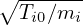
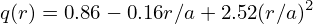
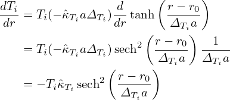
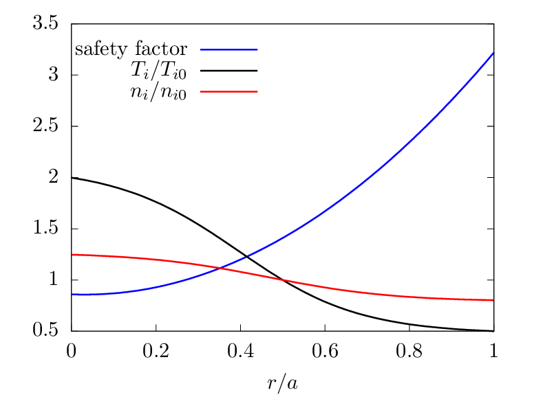

Fig. 4: Benchmarking of TEK code with GENE for the ITG-KBM transition. Upper panel:
growth rate; lower panel: angular frequency.
The DIII-D cyclone base case is a circular and concentric magnetic configuration. The main parameters are summarized in Table 1. All parameters are the same as those in T. Gorler’s paper[4]. (This configuratgion was inspired by DIII-D H-mode discharge #81499 and used in the cyclone project for benchmarking various gyrokinetic ITG turbulence simulations.)
| R0 | a | r0 | q0 | ŝ0 | Baxis | TiR0 | niR0 | Ti0 | qiTi0∕(eTe0) |
| 1.67m | 0.60m | 0.30m | 1.41 | 0.84 | 2.0T | 6.96 | 2.23 | 2.14keV | 1 |

∕Ωi is the thermal ion gyro-radius, Ωi = Baxisqi∕mi is the ion cyclotron angular frequency at the magnetic axis.The safety factor profile is chosen as [6]

This profile gives q0 ≡ q(0) = 1.41 and ŝ = 0.84 at r = r0. The equilibrium ion temperature and number density profile are given by
| (283) |
| (284) |
where ΔTi = Δni = 0.3, ni0 = 4.66 × 1019m−3, Ti0 = 2.14keV. Then the radial derivatives are written as

The corresponding gradient scale lengths of Ti and ni are then given by
| (285) |
and
| (286) |
where sech2(⋅) ≡ 1 − tanh2(⋅). The electron density and temperature profiles are assumed to be identical to those of ions. The electron mass is set as me = 1.82 × 10−30kg, i.e., two times the realistic value of electron mass.
The profiles of safety factor, temperature, and density are plotted in Fig. 3.

Mode structures:
ITG-KBM transition:


 1.6022d-16
1.6022d-16